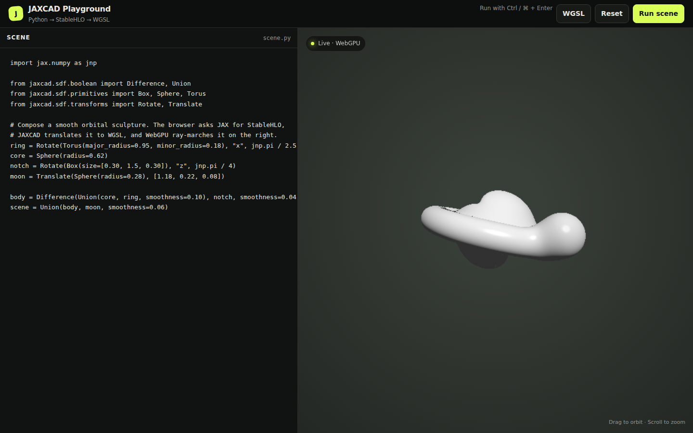

WebGPU Viewer
JAXCAD provides two interactive WebGPU workflows: a standalone browser playground for editing complete Python scenes and a compact widget for Jupyter notebooks.
WebGPU requires localhost or HTTPS and a browser/platform combination with an available GPU adapter. The viewer reports adapter, device, context, shader, and device-loss failures directly over the canvas. Mozilla currently enables WebGPU by default on Windows and Apple-silicon macOS; Linux support remains Nightly-only.

The canvas above is running the example scene directly in this page. Its shader was compiled from JAXCAD through StableHLO to WGSL; drag the scene to orbit it and scroll to zoom. The documentation is static, so editing and executing Python stays in the local playground described below.
Browser playground
From a development checkout, install JAXCAD and start the local viewer:
uv sync
uv run jaxcad-viewer --openThe module entry point works as well, and accepts a custom port:
python -m jaxcad.viewer.playground --open --port 9000The playground opens with a complete material example. Edit the Python on the left and press Run scene or Ctrl+Enter (Cmd+Enter on macOS) to update the preview. The final SDF must be assigned to a variable named scene:
from jaxcad.render import Material
from jaxcad.sdf.boolean import Union
from jaxcad.sdf.primitives import Plane, Sphere
from jaxcad.sdf.transforms import Translate
red = Material(color=[0.8, 0.035, 0.015], roughness=0.42)
glass = Material(color=[0.94, 0.98, 1.0], opacity=0.0, ior=1.5)
scene = Union(
Translate(Sphere(0.72, material=red), [-0.8, -0.38, 0.0]),
Translate(Sphere(0.58, material=glass), [0.8, -0.5, 0.15]),
Plane(-1.1, material=Material(color=[0.1, 0.12, 0.16])),
)The deterministic preview redraws only after a scene, camera, or viewport change. Select Path trace to progressively accumulate indirect lighting, material reflections, and glass transport. Accumulation resets automatically when the scene, camera, viewport, or rendering mode changes.
Controls
| Action | Control |
|---|---|
| Compile the editor | Run scene or Ctrl+Enter / Cmd+Enter |
| Orbit the camera | Drag in the preview |
| Zoom | Scroll in the preview |
| Restore the example | Reset |
| Toggle progressive global illumination | Path trace / Preview |
| Choose rendering quality | Draft / High / Ultra |
| Inspect the complete generated shader | WGSL |
Compilation path
Each update follows the same path used by the shader backend:
- The local server evaluates the Python and reads
scene. - JAX traces distance and material evaluation and lowers both to StableHLO.
- JAXCAD emits WGSL
sdf,material_base, andmaterial_opticsfunctions. - The browser embeds those functions in either the preview or path-tracing transport runtime and builds the WebGPU pipelines.
Compilation runs in a separate child process with a timeout, so a failed edit does not take down the viewer server. Python tracebacks and WebGPU shader errors appear under the editor.
Path-tracing mode
The path tracer launches one jittered camera sample per pixel per animation frame and averages samples in linear HDR. It supports:
- cosine-weighted diffuse and importance-sampled GGX reflection;
- explicit mirror reflectivity and Schlick-Fresnel glass reflection/refraction;
- finite-sun next-event estimation with progressively resolved soft shadows;
- multi-bounce environment lighting and Russian-roulette termination;
- sign-crossing intersection tests with binary refinement, avoiding false silhouette and shadow hits on rays that merely pass close to a surface;
- ACES tone mapping in a separate presentation pass.
The quality selector changes framebuffer resolution in both preview and path mode. In path mode it additionally changes bounce depth, sun-visibility samples, and the accumulation limit. The status pill always identifies WebGPU as the active backend and includes adapter details when the browser exposes them; the viewer has no silent WebGL fallback.
Two half-float textures alternate between sampled input and render attachment. WebGPU does not allow one texture to be sampled and rendered into in the same pass, so this ping-pong design is required rather than incidental. The playground offers three quality budgets. High is the default at roughly 900,000 pixels, six bounces, two sun-visibility samples per hit, and 512 samples per pixel; Draft favors interaction, while Ultra opts into a 1.6-million-pixel, eight-bounce, four-visibility-sample, 1,024-sample budget.
The finite sun is sampled only through next-event estimation and is not part of the environment radiance seen by BSDF paths, so the current strategies do not overlap. Multiple importance sampling becomes useful when emissive area lights or an importance-sampled environment map are added. The research and scope decisions are recorded in research/path-tracing.md.
The playground executes the editor contents as Python on your computer. It binds only to localhost and protects compile requests with a per-session token, but it is not a sandbox. Only run code you trust.
Jupyter widget
Install the optional notebook dependencies:
pip install -e ".[viewer]"Then display any JAX-traceable SDF directly in a notebook:
from jaxcad.sdf.primitives import Sphere
from jaxcad.viewer import SDFViewer
scene = Sphere(radius=1.0)
viewer = SDFViewer(scene, height=480)
viewerThe notebook viewer supports orbit, zoom, pan, and camera reset. Recompile an existing widget after changing a scene without recreating its output cell:
viewer.update_scene(new_scene)See the rendering notebook for a complete composition and hot-reload example.
Troubleshooting
WebGPU is unavailable
Use a WebGPU-capable browser and make sure hardware acceleration is enabled. The editor can still compile and show the generated WGSL when no adapter is available.
The command is not found
Run python -m jaxcad.viewer.playground --open, or reinstall the current checkout so the jaxcad-viewer console script is created.
A scene does not compile
Confirm that the source assigns a callable SDF to scene. The error panel includes the Python traceback or WGSL compiler message needed to locate the failure.